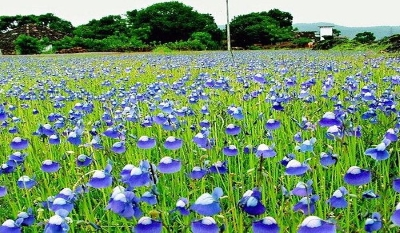

KANNUR
Kannur is a culturally and historically rich district in the north of Kerala. It has long been a port and trade center and has had trade relations with several civilizations including Greeks, Romans and Arabs. It is part of the Western Ghats and hence blessed with many natural treasures. Kannur is dubbed as the City of Looms and Lores, thanks to the flourishing handloom industry and folk art called Theyyam. Theyyamis a ritualistic artform encompassing dance, music and mime, where the artist dons the guise of God. Kannur is believed to have got its name from being the land of Kannan or Krishna. True to the legend there are many famous temples in the region. The district is also famous for many alluring spots of interest including Payyambalam and Muzhuppilangadi beach, Arakkal museum, St. Angelo’s Fort etc. A visit to Kannur will be give a glimpse of the rich cultural tradition unique to Kerala.
Explore Kannur

FORT ST. ANGELOS
KAVVAYI ISLANDS
MADAYIPARA
MUZHAPPILANGAD DRIVE-IN BEACH
PALAKKAYAM THATTU
PAYYAMBALAM BEACH
.png)